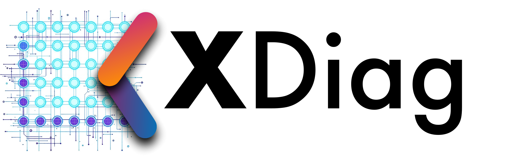
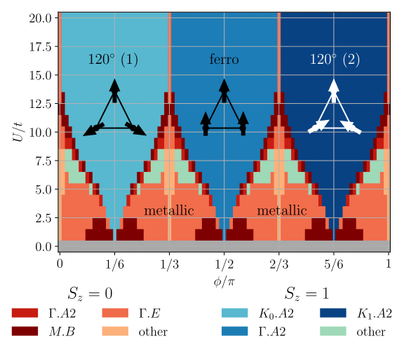
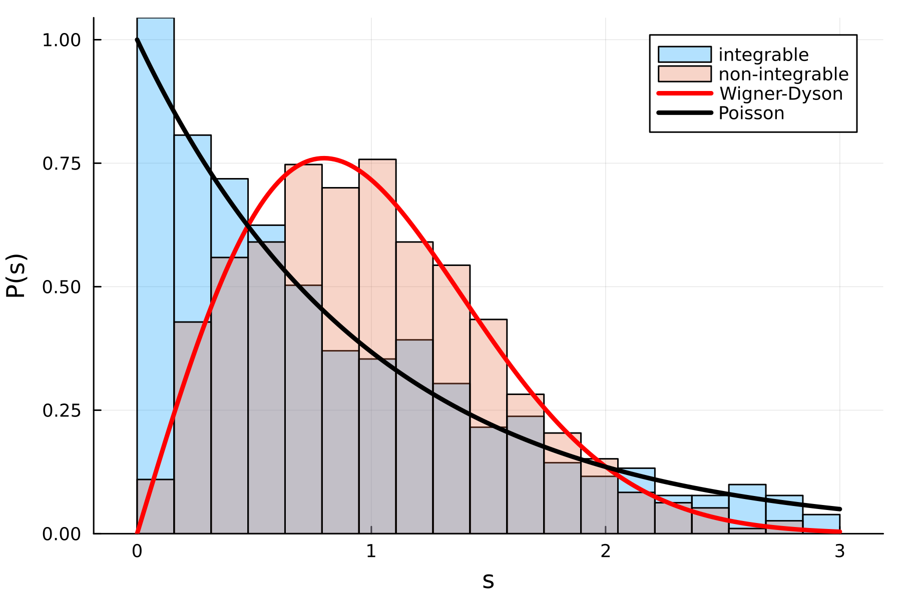
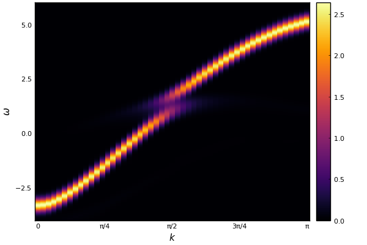
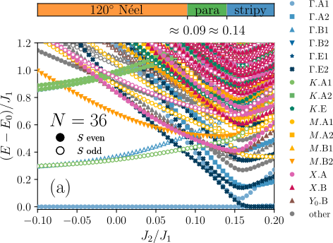

Home

Exact Diagonalization of quantum many-body systems — in Julia and C++.
Quick Start User Guide Documentation
| Languages | Code status | Version |
|---|---|---|
| v0.5.0 |
New release
Jul. 30, 2026 - New major release v0.5.0: a generic operator algebra, spinless-fermion and boson blocks, an LOBPCG eigensolver, and improved memory efficiency
Overview
XDiag is a library for performing exact diagonalizations of quantum many-body systems. It is designed to be both easy to use and highly performant, and consists of a core C++ library xdiag, and a convenient Julia wrapper XDiag.jl.
Key features:
- Many Hilbert space types — spins, electrons, \(t\)-\(J\) models, spinless fermions, and bosons.
- A full operator algebra — assemble arbitrary operators and multiply or hermitian-conjugate them freely.
- Iterative algorithms — Lanczos and LOBPCG diagonalization, and real- or imaginary-time evolution.
- Symmetries — exploit space-group symmetries through symmetry-adapted bases.
- Parallelization — shared-memory with OpenMP and distributed-memory with MPI.
- Optimized combinatorics for fast navigation of large Hilbert spaces.
Gallery
A few results produced with XDiag:



